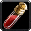

Essence éthérée
[ Essence of ether ]
inhalation (toxine) - 300 po
Une créature sujette à ce poison doit réussir un jet de sauvegarde de Constitution DD 15 pour ne pas devenir empoisonnée durant 8 heures. La créature empoisonnée est inconsciente et se réveille si elle subit des dégâts ou si une autre créature prend une action pour la secouer et ainsi la réveiller.
Dungeon Master´s Guide